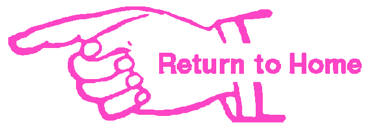
listen along here:
[Verse 1]
I'm gonna make it bend and break (It sent you to me without wings)
Say a prayer, but let the good times roll
In case 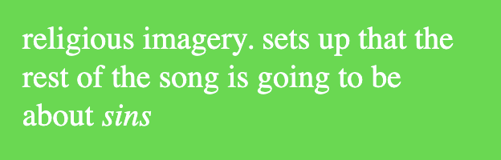
And I want these words to make things right
But it's the 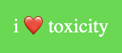
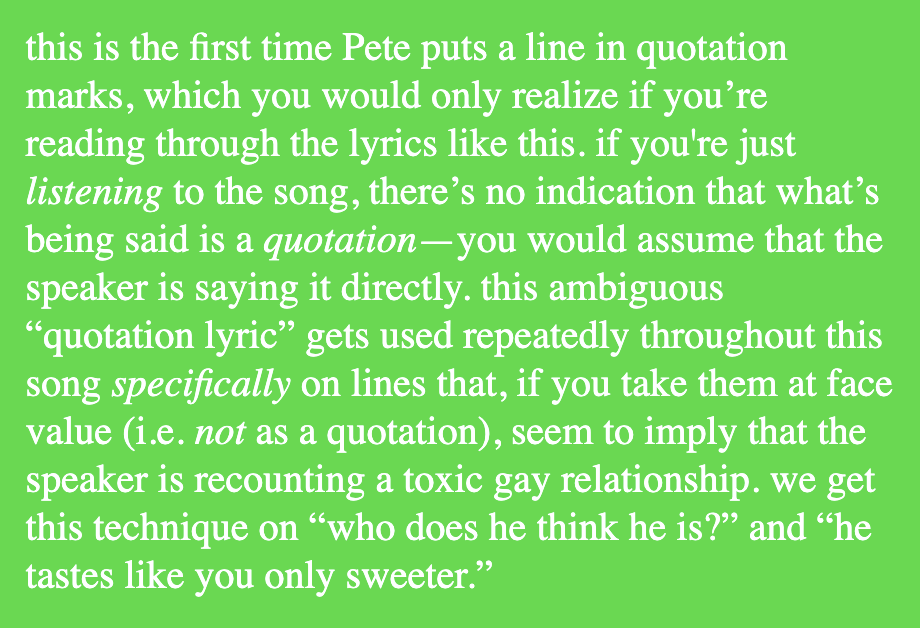
If that's the worst you got, better put your 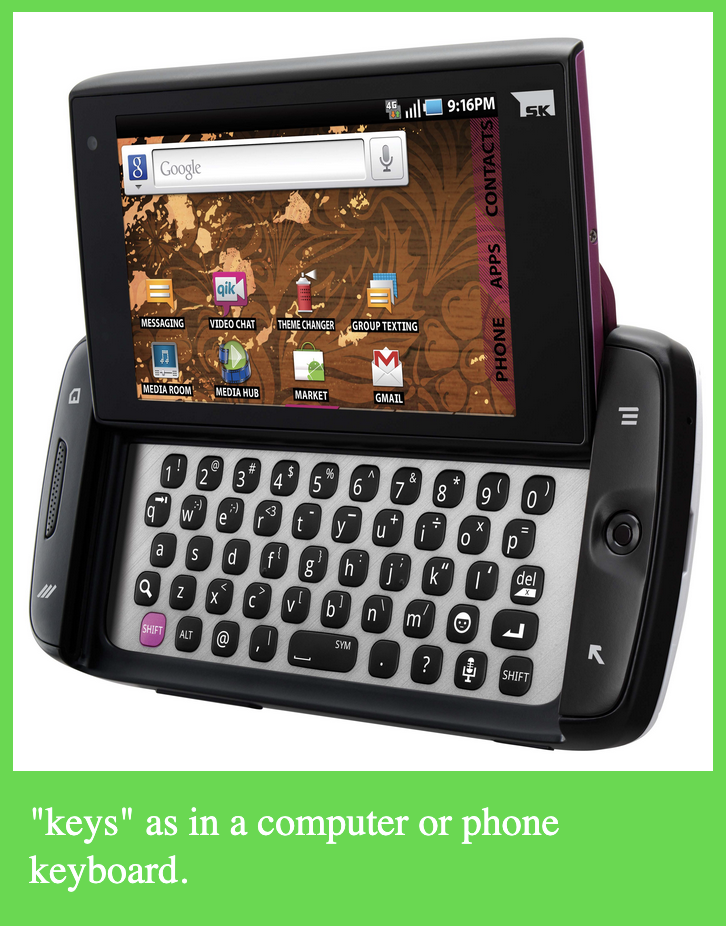
[Chorus]
One night and one more time
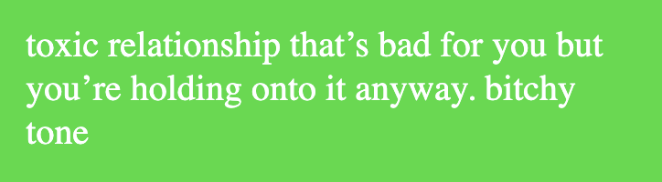
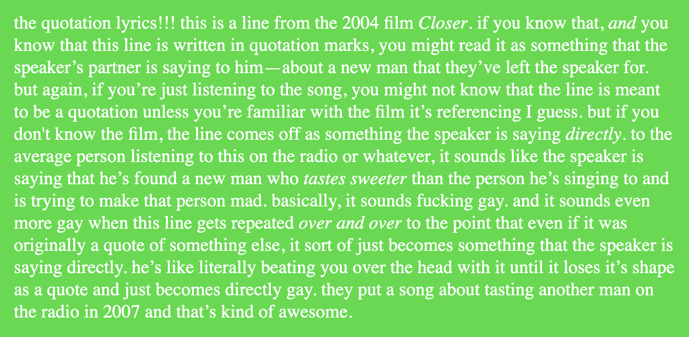
One night, yeah, and one more time
Thanks for the memories, thanks for the memories
"See, he tastes like you, only sweeter," oh-oh-oh-oh-oh
[Verse 2]
Been looking forward to the future
But my eyesight is going bad
And this crystal ball
It's always cloudy except for (Except for)
When you look into the past (Look into the past)
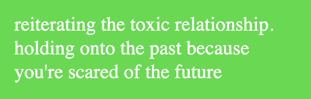
[Chorus]
One night and one more time
Thanks for the memories, even though they weren't so great
"He tastes like you, only sweeter"
One night, yeah, and one more time
Thanks for the memories, thanks for the memories
"See, he tastes like you, only sweeter," oh-oh-oh-oh-oh
[Bridge]
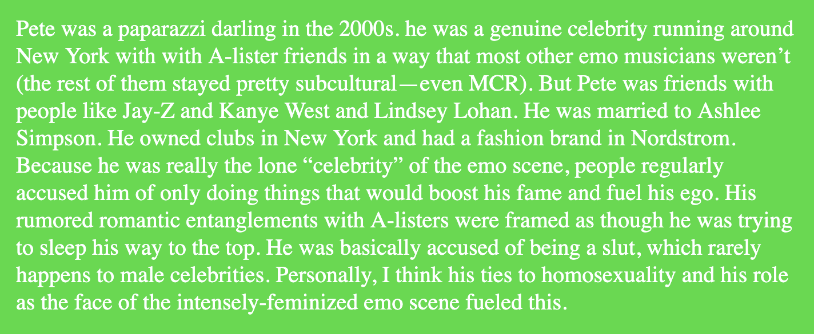
In hotel rooms, 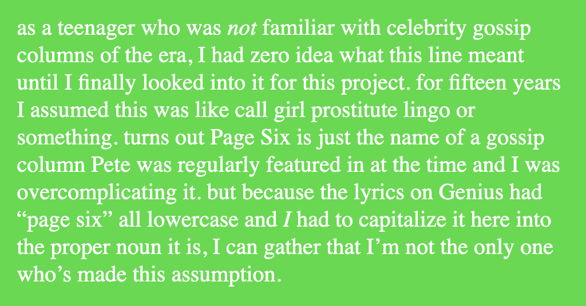
Get me out of my mind
Get you out of those clothes
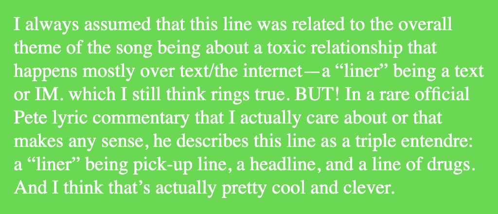
From getting you into the mood, woah
[Chorus]
One night and one more time
Thanks for the memories, even though they weren't so great
"He tastes like you, only sweeter"
One night (Woah), yeah (Oh), and one more time
Thanks for the memories, thanks for the memories
"See, he tastes like you, only sweeter," oh-oh-oh-oh-oh
One night and one more time (One more night, one more time)
Thanks for the memories, even though they weren't so great
"He tastes like you, only sweeter," oh-oh-oh-oh-oh
One night, yeah, and one more time (One more night, one more time)
Thanks for the memories, thanks for the memories
"See, he tastes like you, only sweeter," oh-oh-oh-oh-oh